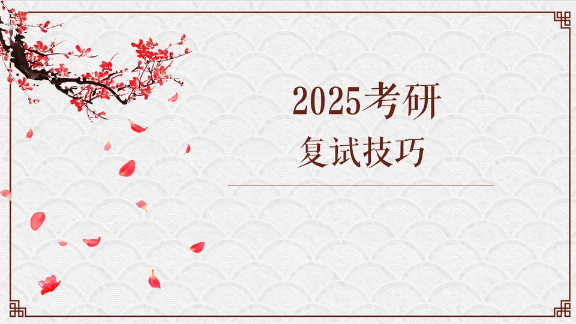
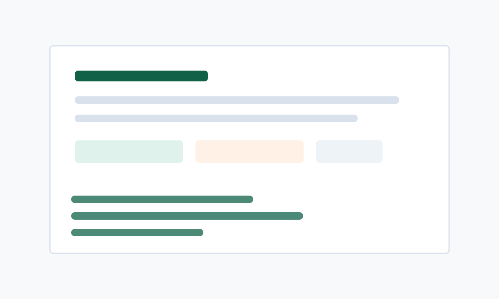

Computer Science / Software Engineering
研究 · 工程 · 写作
记录升学经验、技术笔记和工具使用心得。这里更像一个长期维护的材料库，不只是零散文章。
整理保研官方入口、信息平台、常见术语、材料准备和时间轴，适合低年级同学快速建立准备框架。

围绕复试材料、简历展示、导师联系和面试表达，附带视频讲解和可下载资料。

记录 Git 初始化、提交、分支管理、合并和常用工作流，适合作为开发工具速查笔记。